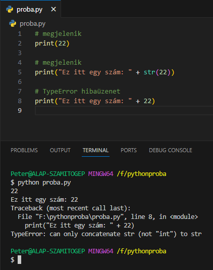
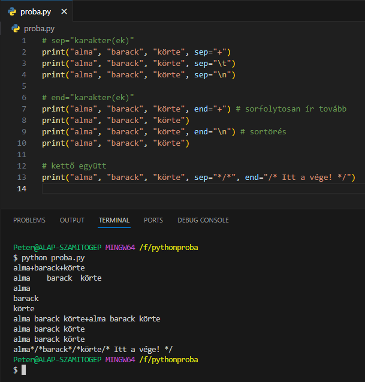

Kicsit előremutatóan foglalkozzunk a
print() függvénnyel. Ennek
segítségével tudunk információkat megjeleníteni a kimenti
felületen, a konzolon.
A függvény alapvetően csak szöveges tartalmat tud
megjeleníteni. Ha a szöveg mellett más adattípus is
megjelenik, akkor azt szöveggé kell alakítani a
str() konstruktorral.

sep='karakter': Ezzel az
értékkel beállíthatjuk, hogy a különböző szövegrészek milyen
karakterekkel legyenek elválasztva, szeparálva.
end='karakter': Ezzel az
értékkel beállíthatjuk, hogy milyen karakterekkel legyen
lezárva a szöveg.

input() függvény:
Viszont a másik oldalon szükséges az információk bekérése a
felhasználótól. Ehhez az
input() függvényt használjuk.